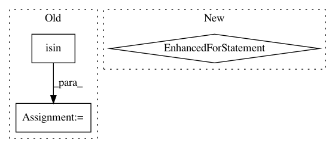

fd633602af08b199d87d222a8cfb85acea17b55a,optuna/visualization.py,,_get_intermediate_plot,#Any#,52
Before Change
return go.Figure(data=[], layout=layout)
target_state = [TrialState.PRUNED, TrialState.COMPLETE, TrialState.RUNNING]
dst_df = df[df["state"].isin(target_state)]
dst_df = dst_df[dst_df["intermediate_values"].isnull().all(axis=1) == False]
traces = []
for __, row in dst_df.iterrows():
trace = go.Scatter(
x=row["intermediate_values"].index,
After Change
target_state = [TrialState.PRUNED, TrialState.COMPLETE, TrialState.RUNNING]
trials = [trial for trial in trials if trial.state in target_state]
traces = []
for trial in trials:
trace = go.Scatter(
x=tuple(trial.intermediate_values.keys()),
y=tuple(trial.intermediate_values.values()),
mode="lines+markers",
marker={
"maxdisplayed": 10
},
name="Trial{}".format(trial.number)
)
traces.append(trace)
figure = go.Figure(data=traces, layout=layout)
return figure
In pattern: SUPERPATTERN
Frequency: 3
Non-data size: 3
Instances
Project Name: pfnet/optuna
Commit Name: fd633602af08b199d87d222a8cfb85acea17b55a
Time: 2019-09-11
Author: suehiro619@gmail.com
File Name: optuna/visualization.py
Class Name:
Method Name: _get_intermediate_plot
Project Name: kwgoodman/numerox
Commit Name: d9444f0c2966113ed8dcd075e64e32645e9ec21d
Time: 2017-11-04
Author: kwgoodman@gmail.com
File Name: numerox/metrics.py
Class Name:
Method Name: calc_metrics
Project Name: aertslab/pySCENIC
Commit Name: 6d6a32dd677aa6097c4e77b359f81989c3e949af
Time: 2018-04-05
Author: vandesande.bram@gmail.com
File Name: src/pyscenic/rnkdb.py
Class Name:
Method Name: build_rankings